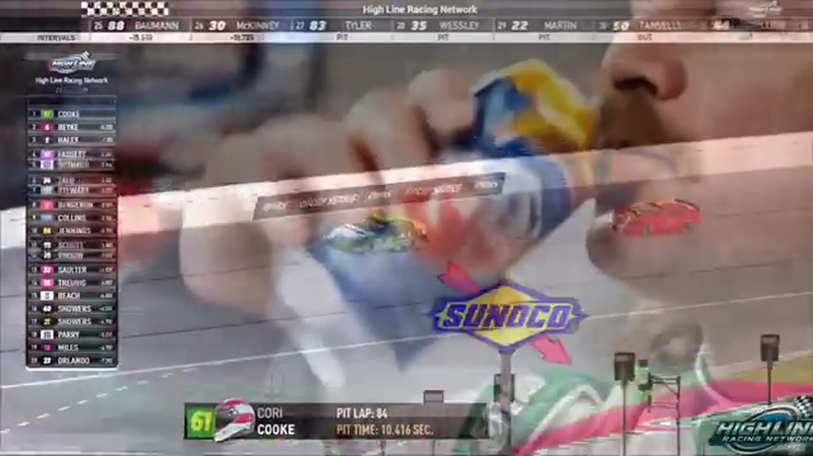

Cory Cook
Rowdy Racing
1 RECOVERED WIN / EVERY ONE RECEIPTED
- Official files
- 17
- Central editions
- 4
- Exact tape cues
- 30
- Accepted podiums
- 2
Cory Cook's accepted HLRN result file contains 1 supported feature win and 2 recovered podiums: S2 R2 at Iowa (P3); S1 R10 at Kansas (P1). HLRN materials currently associate the file with Rowdy Racing. The currently indexed source window runs from November 17, 2025 through July 20, 2026.
The searchable official-broadcast footprint covers 17 race files, with the heaviest repeated track signal at Talladega. 4 Highline Central editions and 30 primary-race jump points connect the result ledger back to the tape. The densest direct-tape categories are restart (8 cues) and incident (7 cues). Those counts describe where the name is easiest to find; they are not fault, pace, or performance grades. A source-attributed car frame is published with its original video and timestamp. That is the current discovery map for Cory Cook.
No unsupported start total, full points total, car number, or finishing position is added around those receipts. The dossier grows from accepted results and source appearances, not from broadcast-name volume. Separately, 4 Highline Live files sit on the bonus shelf and never enter the official season ledger. The displayed name is labeled transcript normalized; that status remains visible so an owner roster can strengthen or correct the identity without rewriting the evidence trail. Those boundaries define Cory Cook's public HLRN file.
10 featured race-tape cues
These are discovery routes into complete HLRN broadcasts, not performance grades or inferred results.
- S2 / R2 · RESULT
Nick Bowman is confirmed atop the Iowa results
Nick Bowman takes the checkered after the final restart. The on-screen readout then lists Trevor Haley second and Cory Cook third after Iowa's caution-heavy night.
Iowa - S1 / R10 · RESULT
Cory Cook is confirmed atop the Kansas results
The primary Kansas results and interviews record Cory Cook first, Brandon Bikey second, and Trevor Haley third.
Kansas - S2 / R2 · FINISH
Nick Bowman crosses ahead of Trevor Haley at Iowa
The final Iowa restart resolves with Nick Bowman reaching the checkered ahead of Trevor Haley. The cut stays with the live finish call and its immediate aftermath on the primary tape.
Iowa - S1 / R10 · FINISH
Cory Cook and Brandon Bikey enter the final-lap decision
S1 / R10 at 1:40:17: The white flag opens the final-lap decision at Kansas, with Cory Cook and Brandon Bikey named in the decisive group. The cut continues through the immediate finish call on the full primary broadcast.
Kansas - S1 / R10 · FINISH
Cory Cook reaches the Kansas checkered
S1 / R10 at 1:40:49: The primary tape calls Cory Cook at the Kansas checkered and carries the first replay of the finish. The result label is tied to the accepted ledger.
Kansas - S1 / R7 · BATTLE
Matt Brown and Cory Cook carry the Michigan lead battle
S1 / R7 at 1:12:15: The Michigan pack compresses in a front-pack fight while Matt Brown and Cory Cook are named on the call. The chapter keeps the live battle intact and makes no finishing-order claim.
Michigan - S1 / R7 · BATTLE
Cory Cook and Tyler Gothard carry the Michigan lead battle
S1 / R7 at 1:13:09: The Michigan pack compresses in a front-pack fight while Cory Cook and Tyler Gothard are named on the call. The chapter keeps the live battle intact and makes no finishing-order claim.
Michigan - S1 / R6 · BATTLE
The Las Vegas lead pack goes three wide
S1 / R6 at 1:26:29: The Las Vegas pack compresses three wide while Cory Cook, Sandy Curtis, Nick Bowman, and Juan Escamilla are named on the call. The chapter keeps the live battle intact and makes no finishing-order claim.
Las Vegas - S2 / R2 · INTERVIEW
Cory Cook reflects on a caution-heavy Iowa podium
Cory Cook accepts the P3 interview for Rowdy Racing and says he enjoyed the car-and-track combination despite wishing the race had stayed green more often. The clip is first-person context attached to his accepted podium receipt.
Iowa - S1 / R10 · INTERVIEW
Cory Cook tells the winner's side
S1 / R10 at 1:46:43: Cory Cook joins the HLRN booth for a first-person race account. The interview is preserved as context and does not create a placement claim outside the accepted result ledger.
Kansas
Recent editions connected to Cory Cook
Bowman Outlasts Iowa
Trevor Haley took the stage, but Nick Bowman survived a 23-caution night to beat his teammate and Cory Cook.
S1 / R11Bowman Sweeps the Roval
Pole, fastest lap, most laps led, the lone stage, and the win: Nick Bowman left Charlotte with every major companion stat.
S1 / R10Cook Takes Kansas from Haley
Trevor Haley swept the stage points and reached the championship lead, but Cory Cook made the pass that delivered his first HLRN win.
S1 / R7Randy Steals Michigan Late
Trevor Haley and Cory Cook split the stages, but Randy Showers timed the closing run and passed Logan Wilson for his first Highline win.
Complete starts, finishes, and points remain open beyond the recovered results. Name normalization remains reviewable against owner records.